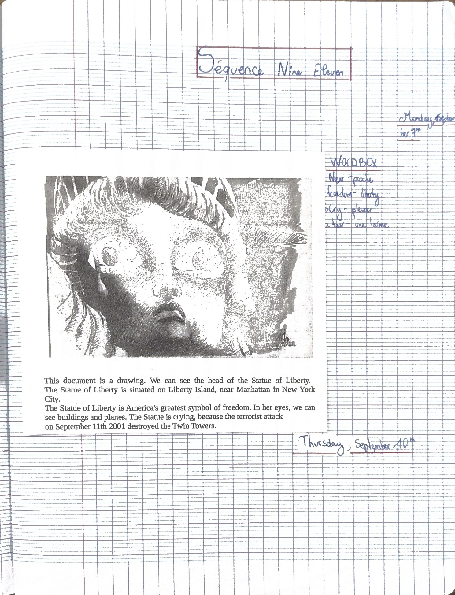
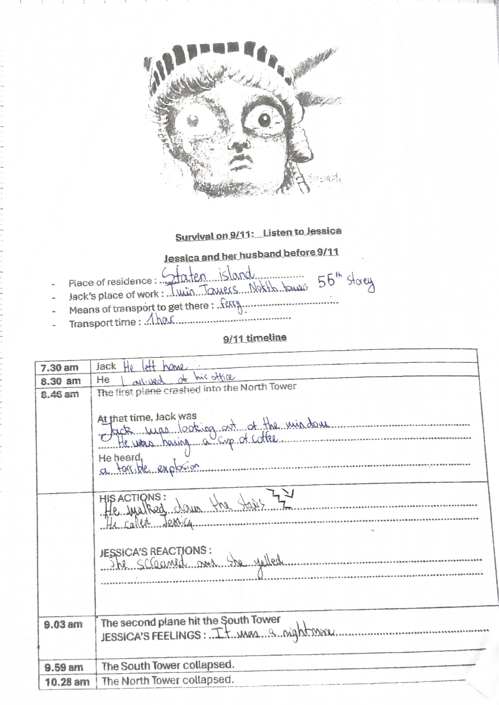
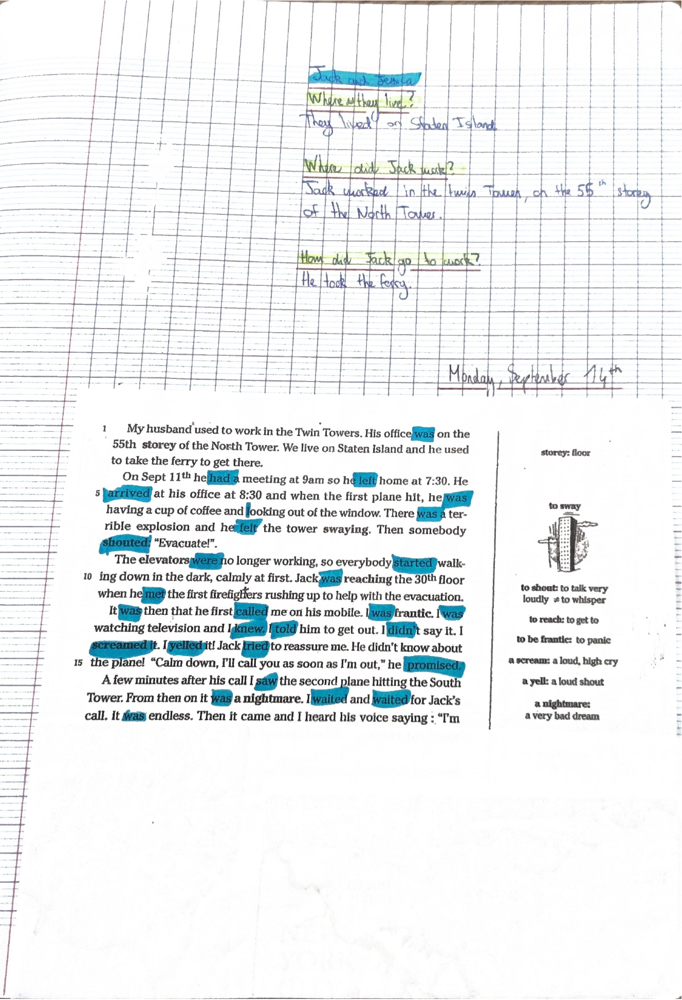
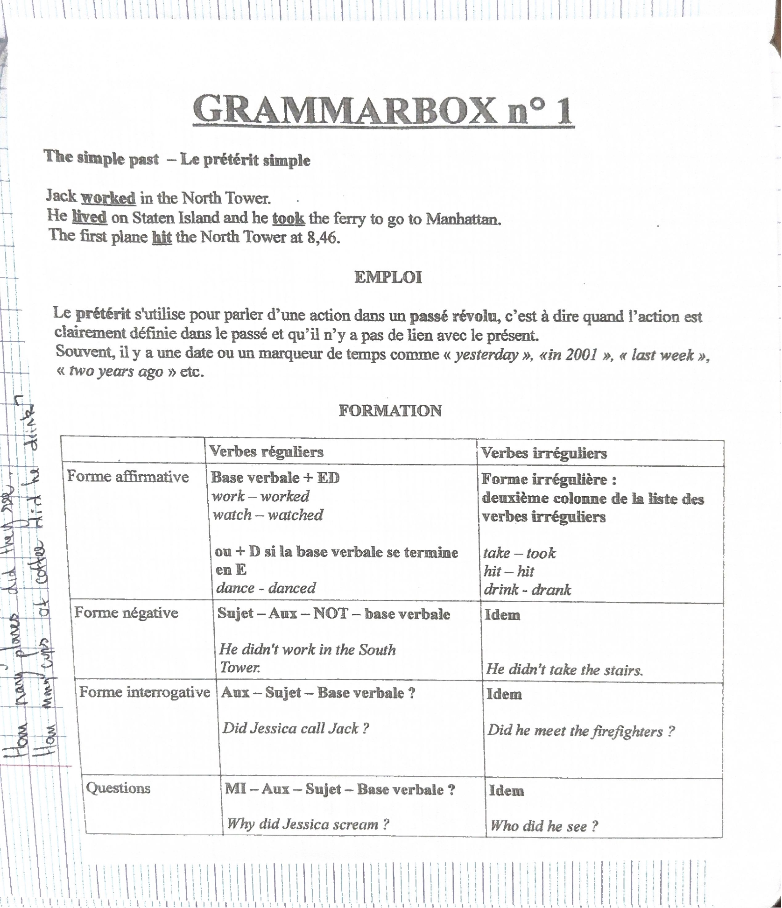
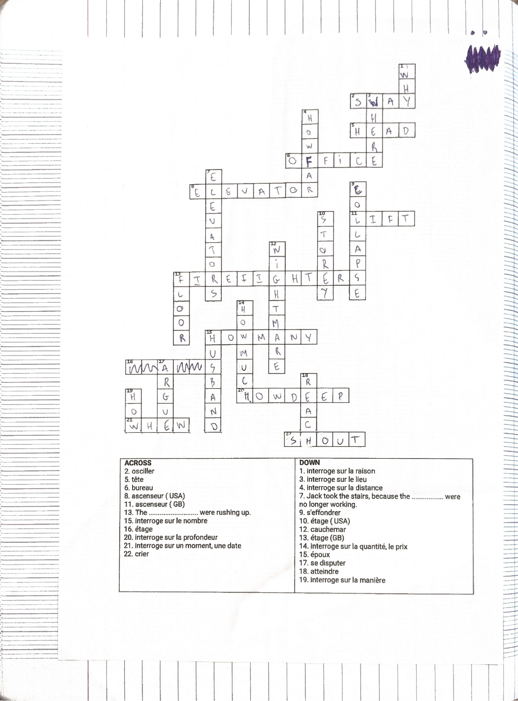
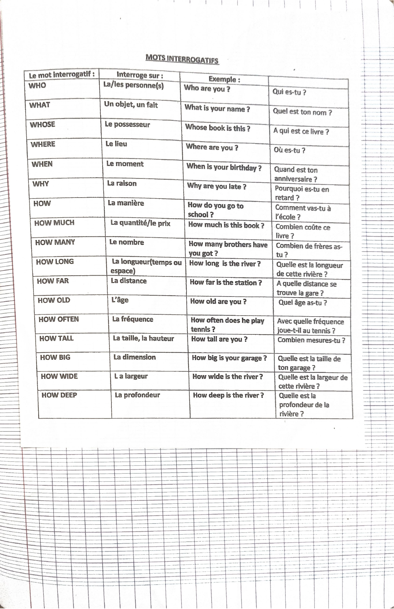
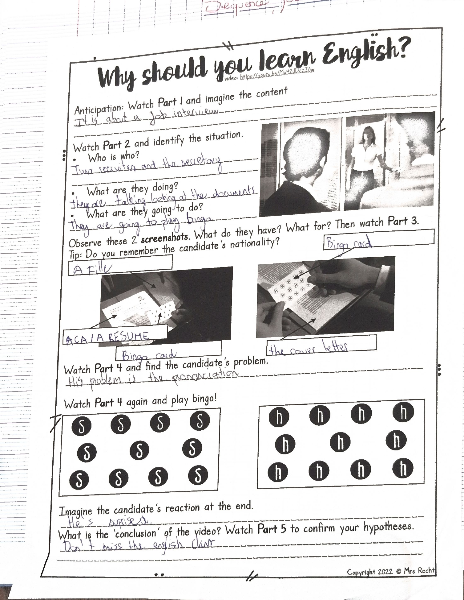
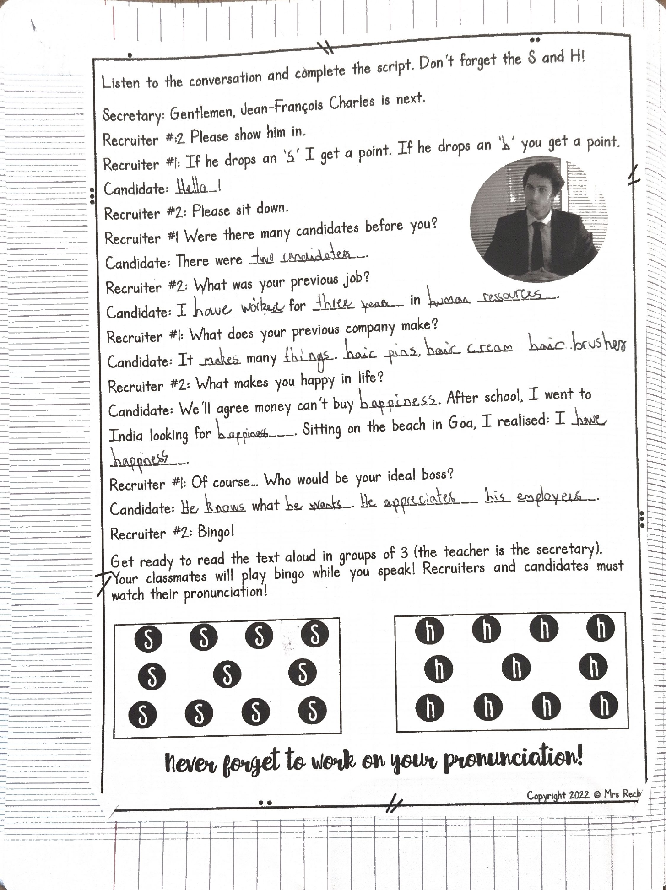

Première séquence de l’année : le 11 septembre 2001, à travers le dessin de la statue de la Liberté
et le témoignage de Jessica, « Survival on 9/11 ». Grammaire : le prétérit simple (Grammarbox n° 1).
La séquence continue en octobre : mots croisés du vocabulaire, « Welcome to New York City » au Labopractice,
le tableau des mots interrogatifs et la liste des 101 verbes irréguliers, à apprendre par tests de 20.
Début novembre, une deuxième séquence commence : l’entretien d’embauche (the job interview),
le vocabulaire du travail, les questions qu’un recruteur pose, et la prononciation du S et du H.
La lecture complète reprend le cahier. La synthèse garde l’essentiel. L’extra va plus loin.
Les séances, dans l’ordre du cahier
Début de la séquence. Dessin de la statue de la Liberté qui pleure, wordbox.
Écoute « Survival on 9/11: Listen to Jessica » : fiche à compléter.
Questions sur Jack et Jessica, puis le texte du témoignage.
Résumé « Survival on nine eleven » que tu as écrit.
Questions au prétérit, mots interrogatifs, Grammarbox n° 1, exercices.
Mots croisés : vocabulaire de la séquence et mots interrogatifs, que tu as remplis.
Labopractice : « Welcome to New York City », nombres en lettres et texte à trous.
Tableau des mots interrogatifs, de who à how deep.
Liste des 101 verbes irréguliers, découpée en cinq tests de 20.
Séquence 2 : vidéo « Why should you learn English? », fiche d’anticipation sur un entretien d’embauche.
Wordbox du travail et les neuf questions d’entretien recopiées.
Script de l’entretien à compléter, lecture à voix haute et bingo du S et du H.
L’histoire de Jack et Jessica, en heures
Jessica et son mari Jack vivent à Staten Island. Jack travaille au 55e étage de la tour Nord des Twin Towers et prend le ferry pour y aller.
Jack left home.
He arrived at his office.
The first plane crashed into the North Tower. Jack was having a cup of coffee and looking out of the window. He heard a terrible explosion. He walked down the stairs and called Jessica.
Heure de la réunion de Jack (he had a meeting at 9 am).
The second plane hit the South Tower. Jessica : « It was a nightmare. »
The South Tower collapsed.
The North Tower collapsed.
À retenir : le prétérit simple
Emploi : une action dans un passé révolu, clairement daté, sans lien avec le présent. Souvent avec un marqueur de temps : yesterday, in 2001, last week, two years ago.
Affirmatif : verbe régulier = base verbale + ED (work → worked), ou + D si la base finit par E (dance → danced). Verbe irrégulier = 2e colonne de la liste (take → took, hit → hit, drink → drank).
Négatif : sujet + didn’t + base verbale. He didn’t work in the South Tower.
Question : (mot interrogatif) + did + sujet + base verbale ? Did Jessica call Jack? Why did Jessica scream?
Après did ou didn’t, le verbe reste à la base verbale : jamais de -ed.
Mots à savoir
freedom
la liberté
to cry / a tear
pleurer / une larme
storey / floor
l’étage
elevator (US) / lift (GB)
l’ascenseur
firefighter
le pompier
to sway
osciller
to shout / to scream / to yell
crier / hurler
to collapse
s’effondrer
to be frantic
être dans tous ses états, paniquer
a nightmare
un cauchemar
Les mots interrogatifs
Mot
Interroge sur
Exemple
Who
la personne
Who are you?
What
un objet, un fait
What is your name?
Whose
le possesseur
Whose book is this?
Where
le lieu
Where are you?
When
le moment
When is your birthday?
Why
la raison
Why are you late?
How
la manière
How do you go to school?
How much
la quantité, le prix
How much is this book?
How many
le nombre
How many brothers have you got?
How long
la longueur (temps ou espace)
How long is the river?
How far
la distance
How far is the station?
How old
l’âge
How old are you?
How often
la fréquence
How often does he play tennis?
How tall
la taille, la hauteur
How tall are you?
How big
la dimension
How big is your garage?
How wide
la largeur
How wide is the river?
How deep
la profondeur
How deep is the river?
Au prétérit, le mot interrogatif se place devant did : How far did they walk? How many planes did they see?
Verbes irréguliers : les tests
Test 1 : verbes 1 à 20, de be à cut.
Test 2 : verbes 21 à 40, de do à grow.
Test 3 : verbes 41 à 60, de hang à meet.
Test 4 : verbes 61 à 80, de pay à sing.
Test 5 : verbes 81 à 101, de sit à write.
Conseil : apprends par blocs de 20, dans l’ordre de la liste, en récitant à voix haute les trois formes et la traduction (begin, began, begun, commencer). Révise le bloc précédent avant d’attaquer le suivant. La liste complète, avec les traductions, est dans la lecture complète.
Séquence 2 : Job interview, l’essentiel
La séquence s’ouvre sur une vidéo humoristique : un candidat français passe un entretien d’embauche, et les deux recruteurs jouent au bingo chaque fois qu’il oublie un S ou un H. Morale : Don’t miss the English class.
Wordbox
Traduction
the job interview
l’entretien d’embauche
the recruiter
le recruteur
the CV / the resume
le CV
the cover letter
la lettre de motivation
a file
un dossier
to apply for
postuler (à)
the schedule
l’emploi du temps, les horaires
happiness
le bonheur
the company
l’entreprise
Cinq questions d’entretien à connaître :
Which job are you applying for?
Can you tell me about yourself?
What is your past job experience?
What type of work schedule are you looking for? Part time? Full time?
When can you start working?
Prononciation : en anglais, le h se prononce, avec un souffle (hello, happy, happiness, he, his), et le s final se fait entendre, au pluriel comme à la 3e personne (candidates, things, brushes, he knows, he wants, it makes). Un francophone qui les oublie fait gagner un point aux recruteurs : If he drops an ‘s’ I get a point. If he drops an ‘h’ you get a point.
Début d’année
La lettre de rentrée de Mrs Puslecki
Trois heures d’anglais par semaine : deux heures en classe entière, une heure d’AP (accompagnement personnalisé, en demi-groupe).
En AP, environ 15 heures dans l’année avec Labopractice, un laboratoire de langues, en salle informatique.
Le cahier est nécessaire à chaque cours. Le porte-vues reste à la maison pour ranger les évaluations. Les cahiers sont vérifiés et notés régulièrement.
Des devoirs pour chaque heure de classe entière, souvent aussi pour l’AP : vocabulaire, verbes irréguliers, leçons, préparation de prises de parole en continu, tâches finales. Ils sont sur Pronote, mais il faut aussi les noter dans l’agenda.
Un devoir commun d’anglais a lieu au deuxième semestre.
Conseil : rester « en contact » avec l’anglais. Séries et films en version originale, livres et magazines niveau A2/B1 (au CDI ou en classe), chansons.
La couverture du cahier montre cinq images : la statue de la Liberté qui pleure, une petite fille escortée par des policiers, une scène du film The Devil Wears Prada, le titre « I love series » et un couple d’un film romantique. Seule la première a déjà une leçon. La couverture et la lettre portent le nom et les signatures, elles ne sont pas affichées ici.
Monday, September 7th
Le dessin : la statue de la Liberté qui pleure

Document collé dans le cahier, avec sa description et la wordbox.
Description du document :
This document is a drawing. We can see the head of the Statue of Liberty. The Statue of Liberty is situated on Liberty Island, near Manhattan in New York City. The Statue of Liberty is America’s greatest symbol of freedom. In her eyes, we can see buildings and planes. The Statue is crying, because the terrorist attack on September 11th 2001 destroyed the Twin Towers.
Wordbox : near : proche ; freedom : liberté ; to cry : pleurer ; a tear : une larme.
Thursday, September 10th · écoute
Survival on 9/11 : listen to Jessica

Fiche d’écoute complétée à la main.
Jessica and her husband before 9/11
Place of residence : Staten Island.
Jack’s place of work : Twin Towers, North Tower, 55th storey.
Means of transport to get there : ferry.
Transport time : 1 hour.
9/11 timeline, avec tes réponses :
7.30 am : Jack left home. 8.30 am : he arrived at his office.
8.46 am, the first plane crashed into the North Tower. At that time, Jack was looking out of the window, he was having a cup of coffee. He heard a terrible explosion.
His actions : he walked down the stairs, he called Jessica.
Jessica’s reactions : she screamed and she yelled.
9.03 am, the second plane hit the South Tower. Jessica’s feelings : it was a nightmare.
9.59 am, the South Tower collapsed. 10.28 am, the North Tower collapsed.
Lecture incertaine : « 1 hour » pour le temps de trajet, écrit très vite sur la fiche.
Monday, September 14th · texte
Le témoignage de Jessica
Questions du cahier, tes réponses :
Where did they live? They lived on Staten Island.
Where did Jack work? Jack worked in the Twin Towers, on the 55th storey of the North Tower.
How did Jack go to work? He took the ferry.

Tu surlignes en bleu tous les verbes conjugués au passé : was, had, left, arrived, felt, shouted, started, met, called, knew, told, screamed, yelled, tried, promised, saw, waited…
Glossaire du texte :
storey : floor (l’étage).
to sway : osciller (dessin d’une tour qui penche).
to shout : to talk very loudly ≠ to whisper (chuchoter).
to reach : to get to (atteindre).
to be frantic : to panic.
a scream : a loud, high cry. A yell : a loud shout.
a nightmare : a very bad dream.
Fiche · Text Survival on 9/11
Exercices sur le texte
A. Listen and fill in the blanks : exercice non rempli dans le cahier.
B. Find the translation in the text (tes réponses, orthographe corrigée) :
l’époux
the husband
le bureau
the office
l’étage
the storey / the floor
l’ascenseur
the elevator (USA) / the lift (GB)
la réunion
the meeting
la fenêtre
the window
osciller
to sway
crier
to shout
dans le noir
in the dark
atteindre
to reach
le pompier
the firefighter
téléphoner
to call
le téléphone portable
the mobile (phone)
hurler
to scream / to yell
essayer
to try
le cauchemar
the nightmare
sans fin
endless
s’effondrer
to collapse
être dans tous ses états
to be frantic
se disputer
to argue
Retouches : tu as écrit « the phone mobile » (on dit the mobile phone, ou the mobile) et « to collapsed » (après to, base verbale : to collapse). Pour l’étage, la fiche demande un mot USA et un mot GB ; tu mets storey côté USA et floor côté GB. En réalité, storey est l’orthographe britannique (story en américain) et floor s’emploie des deux côtés. À vérifier avec la correction en classe.
Thursday, September 17th · ton résumé
Survival on nine eleven
Jack and Jessica lived on Staten Island. Jack worked in the Twin Towers, in the North Tower, on the 55th storey. He took the ferry to go to work. He left home at 7.30. He arrived at his office at 8.30. He was having a cup of coffee and looking out of the window, when he heard a terrible explosion. He walked down the stairs and he called Jessica. He saw firefighters. The first plane hit the North Tower at 8.46 am. The second plane hit the South Tower at 9.03 am. The towers collapsed.
Monday, September 28th · questions
Poser des questions au prétérit
Where did they live?
Where did Jack work?
How did he go to work?
When did Jack arrive at his office?
What did he do when he heard a terrible explosion?
When did he leave home?
Who did he see when he walked down the stairs?
What did Jessica do?
How many planes did they see? How many cups of coffee did he drink? (écrites dans la marge de la Grammarbox)
Schéma noté sous la dernière question : mot interrogatif → auxiliaire (did) → sujet → base verbale.
Retouche : tu as écrit « When did Jack arrived at his office? ». Après did, le verbe reste à la base verbale : When did Jack arrive…?
Grammarbox n° 1
The simple past – le prétérit simple

Fiche de grammaire collée dans le cahier.
Jack worked in the North Tower. He lived on Staten Island and he took the ferry to go to Manhattan. The first plane hit the North Tower at 8.46.
Emploi : le prétérit s’utilise pour parler d’une action dans un passé révolu, c’est-à-dire quand l’action est clairement définie dans le passé et qu’il n’y a pas de lien avec le présent. Souvent, il y a une date ou un marqueur de temps comme yesterday, in 2001, last week, two years ago.
Formation :
Forme affirmative. Verbes réguliers : base verbale + ED (work – worked, watch – watched), ou + D si la base verbale se termine en E (dance – danced). Verbes irréguliers : forme irrégulière, deuxième colonne de la liste des verbes irréguliers (take – took, hit – hit, drink – drank).
Forme négative. Sujet – Aux – NOT – base verbale, pour tous les verbes. He didn’t work in the South Tower. He didn’t take the stairs.
Forme interrogative. Aux – Sujet – Base verbale ? Did Jessica call Jack? Did he meet the firefighters?
Questions. MI (mot interrogatif) – Aux – Sujet – Base verbale ? Why did Jessica scream? Who did he see?
Fiche · Séquence 9/11
Exercices de prétérit
A. True or false? Justify each answer.
The first plane hit during the meeting. False : the first plane hit at 8.46 and the meeting was at 9.00.
Jack felt the tower moving terribly. True. Justification non écrite. Dans le texte : « he felt the tower swaying ».
Jack called Jessica when he was in his office. False : Jack called Jessica when he walked down the stairs. Tu as écrit « when he was walked » : il faut when he walked ou when he was walking.
Jack took the elevators to evacuate. False : Jack took the stairs.
Jack left his office because he knew about the plane. False : tu écris « because he heard a plane ». Retouche à vérifier : le texte dit qu’il a entendu une explosion, senti la tour osciller, et que quelqu’un a crié « Evacuate! ». « He didn’t know about the plane. »
B. Conjugue au prétérit simple (tes réponses, puis correction) :
They (WAIT) : they waited ✓ ; they didn’t wait ✓ ; tu écris « Waited they? » → Did they wait? ; tu écris « Yes, they waited » → Yes, they did. ; « No, they didn’t wait » → No, they didn’t.
He (HAVE) : he had ✓ ; he didn’t have ✓ ; tu écris « Had he? » → Did he have? ; réponse brève affirmative peu lisible → Yes, he did. ; tu écris « No, he not had » → No, he didn’t.
Retouche : la forme interrogative et les réponses brèves se font avec l’auxiliaire did, comme dans la Grammarbox. Tu as inversé sujet et verbe, comme en français.
C. Mets les verbes au prétérit simple :
On September 11th, Jack didn’t leave home very early. He had breakfast and he began a book. He took the ferry and he didn’t arrive late at work.
Retouches : tu as écrit « didn’t leave » puis « left » en surcharge (la bonne forme est didn’t leave) et « didn’t arrived » (il faut didn’t arrive). had, began et took sont justes.
D. Pose la question sur le(s) mot(s) souligné(s) : exercice non rempli dans le cahier.
Octobre · mots croisés
Mots croisés : vocabulaire de la séquence

La grille que tu as remplie. Les définitions mélangent le vocabulaire du texte et les mots interrogatifs.
Across (horizontalement) :
2. osciller → sway
5. tête → head
6. bureau → office
8. ascenseur (USA) → elevator
11. ascenseur (GB) → lift
13. The … were rushing up. → firefighters
15. interroge sur le nombre → how many
16. étage → case raturée, non remplie dans la grille.
20. interroge sur la profondeur → how deep
21. interroge sur un moment, une date → when
22. crier → shout
Down (verticalement) :
1. interroge sur la raison → why
3. interroge sur le lieu → where
4. interroge sur la distance → how far
7. Jack took the stairs, because the … were no longer working. → elevators
9. s’effondrer → collapse
10. étage (USA) → storey
12. cauchemar → nightmare
13. étage (GB) → floor
14. interroge sur la quantité, le prix → how much
15. époux → husband
17. se disputer → argue
18. atteindre → reach
19. interroge sur la manière → how
Retouche : comme sur la fiche d’exercices, la grille range storey côté USA et floor côté GB. En réalité, storey est plutôt l’orthographe britannique (story aux États-Unis) et floor s’emploie des deux côtés de l’Atlantique. Garde la version de la fiche pour l’évaluation.
Octobre · Labopractice
Labopractice : Welcome to New York City
Consignes de la fiche : watch the video, fill in the blanks, write the numbers in letters, take the correction sheet and correct, read the text aloud and record it, glue the worksheet in your copybook.
Les nombres en lettres :
381 → three hundred and eighty-one
1931 → nineteen thirty-one
3.5 million → three point five million
37.5 million → thirty-seven point five million
Le texte complété :
The Empire State Building is one of New York’s tallest skyscrapers at 381 meters. It was completed in 1931. Today, 3.5 million people visit it every year. The views from the top are incredible.
Central Park is the biggest park in New York and has 37.5 million visitors every year. People come to relax, cycle, skateboard, rollerblade or run. There is also a lake, a zoo, and two ice skating rinks.
Times Square is one of the busiest parts of New York. It is known for its colourful neon lights and advertising, theaters, restaurants and shops. Many people come here for the New Year’s celebration.
Hot dogs are a traditional snack in New York. Hot dog vendors sell them on the street and serve them with mustard and ketchup.
The M&M store on Times Square is enormous. It sells M&Ms in different colors and also t-shirts, mugs and bags.
Les cinq lieux et faits à retenir :
Empire State Building : 381 mètres, achevé en 1931, 3,5 millions de visiteurs par an, vue incroyable depuis le sommet.
Central Park : le plus grand parc de New York, 37,5 millions de visiteurs par an ; on s’y détend, on y fait du vélo, du skate, du roller, on y court ; un lac, un zoo, deux patinoires.
Times Square : l’un des quartiers les plus animés, néons colorés et publicités, théâtres, restaurants, boutiques, fête du Nouvel An.
Hot dogs : en-cas traditionnel, vendus dans la rue, servis avec moutarde et ketchup.
M&M store : boutique énorme de Times Square, M&Ms de toutes les couleurs, t-shirts, mugs et sacs.
Retouche : tu as écrit « every years » (deux fois). Après every, le nom reste au singulier : every year. Le texte mélange orthographe britannique (colourful) et américaine (theaters, colors) : les deux sont acceptées, l’important est d’être régulier dans ta propre copie.
Octobre · tableau
Les mots interrogatifs

Tableau collé dans le cahier : le mot, ce sur quoi il interroge, un exemple et sa traduction.
Le mot interrogatif
Interroge sur
Exemple
Traduction
Who
la / les personne(s)
Who are you?
Qui es-tu ?
What
un objet, un fait
What is your name?
Quel est ton nom ?
Whose
le possesseur
Whose book is this?
À qui est ce livre ?
Where
le lieu
Where are you?
Où es-tu ?
When
le moment
When is your birthday?
Quand est ton anniversaire ?
Why
la raison
Why are you late?
Pourquoi es-tu en retard ?
How
la manière
How do you go to school?
Comment vas-tu à l’école ?
How much
la quantité / le prix
How much is this book?
Combien coûte ce livre ?
How many
le nombre
How many brothers have you got?
Combien de frères as-tu ?
How long
la longueur (temps ou espace)
How long is the river?
Quelle est la longueur de cette rivière ?
How far
la distance
How far is the station?
À quelle distance se trouve la gare ?
How old
l’âge
How old are you?
Quel âge as-tu ?
How often
la fréquence
How often does he play tennis?
Avec quelle fréquence joue-t-il au tennis ?
How tall
la taille, la hauteur
How tall are you?
Combien mesures-tu ?
How big
la dimension
How big is your garage?
Quelle est la taille de ton garage ?
How wide
la largeur
How wide is the river?
Quelle est la largeur de cette rivière ?
How deep
la profondeur
How deep is the river?
Quelle est la profondeur de la rivière ?
Repère : how + adjectif pose une question de mesure (how old, how tall, how far…). How much va avec ce qui ne se compte pas et avec le prix ; how many va avec ce qui se compte.
Octobre · fiche
Verbes irréguliers 1 à 101
La fiche collée dans le cahier donne, pour chaque verbe, la phonétique (non recopiée ici), le prétérit, le participe passé et la traduction. Les numéros 20, 40, 60, 80 et 101 sont entourés : ce sont les fins de tests.
N°
Infinitif
Prétérit
Participe passé
Traduction
Test 1 · verbes 1 à 20
1
be
was, were
been
être
2
beat
beat
beaten
battre
3
become
became
become
devenir
4
begin
began
begun
commencer
5
bet
bet
bet
parier
6
bind
bound
bound
relier (un livre)
7
bite
bit
bitten
mordre
8
bleed
bled
bled
saigner
9
blow (blow one’s nose)
blew
blown
souffler (se moucher)
10
break
broke
broken
casser
11
bring
brought
brought
apporter
12
build
built
built
construire
13
burn
burnt
burnt
brûler
14
burst
burst
burst
éclater
15
buy
bought
bought
acheter
16
catch
caught
caught
attraper
17
choose
chose
chosen
choisir
18
come
came
come
venir
19
cost
cost
cost
coûter
20
cut
cut
cut
couper
Test 2 · verbes 21 à 40
21
do
did
done
faire
22
draw
drew
drawn
dessiner
23
dream
dreamt
dreamt
rêver
24
drink
drank
drunk
boire
25
drive
drove
driven
conduire
26
eat
ate
eaten
manger
27
fall
fell
fallen
tomber
28
feed
fed
fed
nourrir
29
feel
felt
felt
se sentir, ressentir
30
fight
fought
fought
se battre
31
find
found
found
trouver
32
fly
flew
flown
voler (dans les airs)
33
forbid
forbade
forbidden
interdire
34
forget
forgot
forgotten
oublier
35
forgive
forgave
forgiven
pardonner
36
freeze
froze
frozen
geler, se figer
37
get (get into)
got
got
obtenir (monter dans)
38
give
gave
given
donner
39
go
went
gone
aller
40
grow
grew
grown
grandir, pousser (plante)
Test 3 · verbes 41 à 60
41
hang (hang out)
hung
hung
pendre, suspendre (traîner)
42
have
had
had
avoir
43
hear
heard
heard
entendre
44
hide
hid
hidden
cacher, se cacher
45
hit
hit
hit
frapper
46
hold
held
held
tenir
47
hurt
hurt
hurt
blesser, faire mal, avoir mal
48
keep (keep on)
kept
kept
garder (continuer)
49
know
knew
known
savoir, connaître
50
lay (lay the table)
laid
laid
poser, mettre la table
51
learn
learnt
learnt
apprendre
52
leave
left
left
quitter, partir, laisser
53
lend
lent
lent
prêter
54
let ; let down
let
let
permettre ; laisser (laisser tomber)
55
lie
lay
lain
s’allonger
56
light
lit
lit
allumer, éclairer
57
lose
lost
lost
perdre
58
make
made
made
faire, fabriquer
59
mean
meant
meant
vouloir dire, signifier
60
meet
met
met
rencontrer
Test 4 · verbes 61 à 80
61
pay
paid
paid
payer
62
put
put
put
mettre
63
read
read
read
lire
64
rent
rent
rent
louer
65
ride
rode
ridden
aller à bicyclette, à cheval
66
ring
rang
rung
sonner, téléphoner
67
rise
rose
risen
monter, s’élever
68
run
ran
run
courir
69
say
said
said
dire
70
see
saw
seen
voir
71
seek
sought
sought
chercher
72
sell
sold
sold
vendre
73
send
sent
sent
envoyer
74
set
set
set
mettre, poser, placer
75
shake
shook
shaken
trembler
76
shine
shone
shone
briller
77
shoot
shot
shot
tirer, marquer, tourner (film)
78
show (show off)
showed
shown
montrer (se vanter)
79
shut
shut
shut
fermer
80
sing
sang
sung
chanter
Test 5 · verbes 81 à 101
81
sit (down)
sat
sat
s’asseoir
82
sleep
slept
slept
dormir
83
smell
smelt
smelt
sentir (odorat)
84
speak
spoke
spoken
parler
85
spend
spent
spent
dépenser (de l’argent), passer (du temps)
86
stand
stood
stood
se tenir debout
87
steal
stole
stolen
voler, dérober
88
strike ; strike a deal
struck
struck
frapper, donner un coup ; passer un accord
89
swim
swam
swum
nager
90
take
took
taken
prendre
91
teach
taught
taught
enseigner, apprendre
92
tear
tore
torn
déchirer
93
tell
told
told
dire, raconter
94
think
thought
thought
penser
95
throw
threw
thrown
jeter, lancer
96
understand
understood
understood
comprendre
97
upset
upset
upset
contrarier
98
wake up
woke up
woken up
se réveiller
99
wear
wore
worn
porter (vêtements)
100
win
won
won
gagner
101
write
wrote
written
écrire
Retouches sur la fiche elle-même : rent (n° 64) est en réalité un verbe régulier (rented, rented), la fiche le liste quand même, garde ce qu’elle dit pour le test. Lie (n° 55) au sens de s’allonger fait lay, lain ; ne le confonds pas avec lay (n° 50, poser), ni avec lie = mentir, qui est régulier (lied). Read (n° 63) garde la même orthographe aux trois formes, mais le prétérit et le participe se prononcent « red ». Pour burn, dream, learn, smell, les formes en -ed (burned, dreamed, learned, smelled) existent aussi, surtout en américain.
Séquence 2 · Job interview · début novembre
Why should you learn English? La vidéo

La fiche de la vidéo (Mrs Recht, 2022), complétée au fil des cinq parties. En haut de page, le titre manuscrit de la séquence est coupé par le scan : « Séquence : Job… ».
Anticipation (Part 1) : It’s about a job interview. La vidéo parle d’un entretien d’embauche.
La situation (Part 2), tes réponses :
Who is who? Two recruiters and the secretary.
What are they doing? They are talking, looking at the documents.
What are they going to do? They are going to play bingo.
Les deux screenshots (Part 3) : sur les images, tu as repéré a file (un dossier), a CV / a resume, une bingo card et the cover letter (la lettre de motivation). L’indice de la fiche : la nationalité du candidat, qui est français.
Le problème du candidat (Part 4) : His problem is the pronunciation. Il « laisse tomber » le S et le H (he drops the S and the H) : c’est pour ça que les recruteurs jouent au bingo avec deux cartes, une de S et une de H.
Sa réaction à la fin : He’s upset. Il est contrarié, vexé.
Conclusion de la vidéo (Part 5) : Don’t miss the English class! Ne manque pas le cours d’anglais.
Lecture incertaine : « He’s upset » est écrit très petit sur la fiche. Le sens reste le même quelle que soit la graphie : le candidat est déstabilisé quand le recruteur crie « Bingo! ». La vidéo est un sketch humoristique sur l’accent français en anglais : le h français est muet et le s final ne se prononce pas, deux habitudes qui font sourire un anglophone.
Wednesday, November 4th
Wordbox et questions d’entretien
Wordbox
Traduction
the job interview
l’entretien d’embauche
the recruiter
le recruteur
the CV / the resume
le CV (resume est le mot américain)
the cover letter
la lettre de motivation
a file
un dossier
to apply for
postuler (à un poste)
the schedule
l’emploi du temps, les horaires
happiness
le bonheur
the company
l’entreprise
Les neuf questions d’entretien recopiées dans le cahier, avec leur sens :
Which job are you applying for? Pour quel poste postules-tu ?
Can you tell me about yourself? Peux-tu me parler de toi ?
What are your job skills? Quelles sont tes compétences professionnelles ?
What is your past job experience? Quelle est ton expérience professionnelle ?
What job responsibilities did you have in your last job? Quelles responsabilités avais-tu dans ton dernier emploi ?
Why did you leave your last job? Pourquoi as-tu quitté ton dernier emploi ?
What type of work schedule are you looking for? Part time? Full time? Morning? Night? Quel type d’horaires cherches-tu ? Temps partiel ? Temps plein ? Le matin ? La nuit ?
When can you start working? Quand peux-tu commencer ?
Do you have any questions for me? As-tu des questions à me poser ?
Repère : les questions sur le passé du candidat sont au prétérit avec did (What job responsibilities did you have…? Why did you leave…?), comme dans la Grammarbox n° 1. Les questions sur le présent utilisent are you … -ing (are you applying for, are you looking for) ou can (Can you tell me…? When can you start…?).
Thursday, November 5th · script
Le script : the job interview

« Listen to the conversation and complete the script. Don’t forget the S and H! » Les mots que tu as écrits sont ceux des trous.
Le dialogue complet. Les mots où le candidat doit faire entendre un s ou un h sont en gras.
Secretary: Gentlemen, Jean-François Charles is next.
Recruiter #2: Please show him in.
Recruiter #1: If he drops an ‘s’ I get a point. If he drops an ‘h’ you get a point.
Candidate:Hello!
Recruiter #2: Please sit down.
Recruiter #1: Were there many candidates before you?
Candidate: There were two candidates.
Recruiter #2: What was your previous job?
Candidate: I have worked for three years in humanresources.
Recruiter #1: What does your previous company make?
Candidate: It makes many things: hairpins, hair cream, hairbrushes.
Recruiter #2: What makes you happy in life?
Candidate: We’ll agree money can’t buy happiness. After school, I went to India looking for happiness. Sitting on the beach in Goa, I realised: I havehappiness.
Recruiter #1: Of course… Who would be your ideal boss?
Candidate:Heknows what hewants. Heappreciateshisemployees.
Recruiter #2: Bingo!
Consigne : Get ready to read the text aloud in groups of 3 (the teacher is the secretary). Your classmates will play bingo while you speak! Recruiters and candidates must watch their pronunciation! Par groupes de trois, vous lisez le script à voix haute ; les camarades cochent une case de leur carte à chaque S ou H bien prononcé. Devise de la fiche : Never forget to work on your pronunciation!
Retouches : tu as écrit « hair pias », il faut hair pins (des épingles à cheveux), et « human ressources » avec deux s à la française, alors que l’anglais écrit resources avec un seul s. En revanche, « I have worked for three years » est correct : c’est le present perfect (have + participe passé) avec for + durée, pour une expérience qui compte encore aujourd’hui. Note aussi I realised en orthographe britannique (realized en américain).
Cette partie n’est pas dans ton cahier. Ce sont des connaissances ajoutées, dans le périmètre de la séquence, pour aller plus loin. Ce qui compte pour l’évaluation reste le cours de Mrs Puslecki.
Extra · culture
September 11th, 2001
Ce matin-là, 19 terroristes d’Al-Qaïda détournent quatre avions de ligne. Deux frappent les tours du World Trade Center à New York, un troisième le Pentagone près de Washington. Le quatrième s’écrase en Pennsylvanie, après la révolte des passagers.
Près de 3 000 personnes sont tuées, dont plus de 340 pompiers de New York.
À l’emplacement des tours, on trouve aujourd’hui le 9/11 Memorial (deux bassins à la place des tours) et le One World Trade Center, haut de 1 776 pieds, en référence à l’année de l’indépendance américaine.
Les Américains écrivent la date mois/jour : 9/11 se lit nine eleven. Les Britanniques écriraient 11/9.
La statue de la Liberté, Lady Liberty, a été offerte par la France aux États-Unis et inaugurée en 1886. Elle a été conçue par Bartholdi, avec une structure de Gustave Eiffel.
Extra · grammaire
Pièges du prétérit
Prononciation de -ed : /t/ après un son sourd (worked, watched), /d/ après un son sonore (lived, called), /ɪd/ après t ou d (waited, started).
Orthographe : consonne + y → -ied (try → tried, cry → cried) ; voyelle + y → -yed (play → played) ; syllabe finale accentuée en une seule voyelle + une seule consonne → on double la consonne (stop → stopped, mais visit → visited).
Be n’utilise pas did : I was, you were ; He wasn’t at home ; Were they in the tower?
Prétérit en be + -ing, vu dans le texte : he was having a cup of coffee. Il décrit une action en cours dans le passé, souvent interrompue par une action au prétérit simple : He was looking out of the window when the plane hit.
Used to, vu dans le texte : My husband used to work in the Twin Towers = une habitude passée qui n’existe plus.
Extra · verbes irréguliers du texte
À connaître par cœur
be – was/were – been
être
have – had – had
avoir
leave – left – left
partir, quitter
feel – felt – felt
sentir, ressentir
meet – met – met
rencontrer
know – knew – known
savoir, connaître
tell – told – told
dire, raconter
see – saw – seen
voir
take – took – taken
prendre
hit – hit – hit
frapper
drink – drank – drunk
boire
begin – began – begun
commencer
Extra · méthode
Mémoriser les verbes irréguliers par familles de sons
Plutôt que 101 lignes isolées, regroupe les verbes qui « chantent » pareil. Les numéros renvoient à la liste du cahier.
i – a – u : begin – began – begun (4), drink – drank – drunk (24), ring – rang – rung (66), sing – sang – sung (80), swim – swam – swum (89).
Voyelle courte, deux formes identiques en -t ou -d : feel – felt (29), keep – kept (48), leave – left (52), meet – met (60), sleep – slept (82) ; feed – fed (28), bleed – bled (8).
Participe en -en sur le prétérit : bite – bit – bitten (7), hide – hid – hidden (44), forget – forgot – forgotten (34), eat – ate – eaten (26), write – wrote – written (101), ride – rode – ridden (65), drive – drove – driven (25).
Méthode : récite chaque famille à voix haute, puis mélange-les. Écris les 20 verbes du test en trois colonnes, cache une colonne et retrouve-la. Les erreurs typiques à bannir : goed, catched, thinked, writed, taked, drinked.
Extra · précisions
How much ou how many, what ou which, et les nombres
How much + nom indénombrable (ce qui ne se compte pas : water, time, money, bread) : How much money have you got? Et pour le prix : How much is it?
How many + nom dénombrable au pluriel (ce qui se compte) : How many brothers? How many planes did they see?
What pose une question ouverte, which suppose un choix limité : What colour do you like? (en général) ; Which colour do you want, red or blue? (parmi ces deux).
Hundred et and : en anglais britannique, on dit and après hundred : three hundred and eighty-one. Les Américains disent souvent three hundred eighty-one. Hundred, thousand, million restent au singulier après un nombre : three hundred, thirty-seven point five million.
Les années se lisent par paires de deux chiffres : 1931 = nineteen thirty-one, 1886 = eighteen eighty-six. Exceptions : 2000 = two thousand, 2001 = two thousand and one, puis à partir de 2010 les deux usages existent (twenty ten ou two thousand and ten).
La décimale s’écrit avec un point et se lit point : 3.5 = three point five. La virgule sert aux milliers : 37,500,000.
Extra · séquence 2 · prononciation et vocabulaire
Le h aspiré, le s final et les mots du travail
Le h anglais se prononce : c’est un souffle, comme quand tu fais de la buée sur une vitre. Hello, happy, house, he, his, hair commencent tous par ce souffle. En français, le h est muet (l’homme, l’hôtel) : c’est pour ça qu’un francophone oublie souvent de le faire entendre. Sans le h, hair devient air, hate devient ate, hungry devient angry : le sens change.
Mots pièges où le h est vraiment muet : hour (se prononce comme our), honest, honour, heir. On dit donc an hour, an honest man, avec an, puisque le mot commence par un son de voyelle.
Le s final se prononce, et il porte souvent le sens : le pluriel (two candidates, many things, hair brushes) et la 3e personne du singulier au présent (he knows, he wants, it makes, he appreciates). En français, le s final est muet (les candidats) : encore une habitude à combattre. Trois sons possibles : /s/ après un son sourd (wants, makes, appreciates), /z/ après un son sonore (knows, years, employees), /ɪz/ après un son sifflant (brushes, buses, watches).
Present perfect + for / since, en une ligne : I have worked for three years (depuis trois ans, durée) ; I have worked here since 2022 (depuis 2022, point de départ). Have + participe passé, pour une expérience qui compte encore aujourd’hui.
Vocabulaire en plus : the salary (le salaire), skills (les compétences), to hire (embaucher), to be fired (être renvoyé), a part-time job (un travail à temps partiel), a full-time job (à temps plein), an employer (un employeur) ≠ an employee (un employé), a boss (un patron).
Entraînement : relis le script du cahier à voix haute en exagérant chaque h et chaque s final, puis une deuxième fois à vitesse normale. Fais jouer le bingo à quelqu’un : si la carte reste vide, tu as gagné.
Tu as fini de lire ?
Le quiz sert à vérifier ce que tu as retenu, pas à apprendre. Lis d’abord le cours en entier (Complet), relis la Synthèse, et seulement ensuite teste-toi.